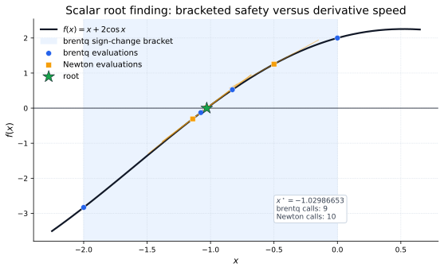
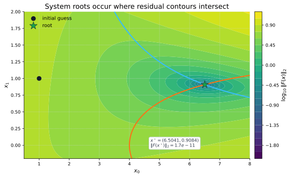
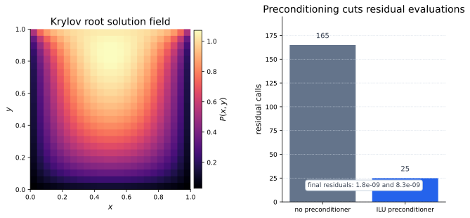

From Minimizing To Solving
In minimization, success means the objective value cannot be improved nearby. In root finding, success means an equation is satisfied. For a scalar function, the target is a number \(x^\star\) where
For a system, the unknown \(x\) is a vector and every residual component must vanish at the same time:
A tempting shortcut is to minimize \(\|F(x)\|_2^2\) and call the minimizer a root. Sometimes that is useful. But a small minimum of \(\|F(x)\|_2^2\) is not the same promise as \(F(x)=0\), and root solvers can use equation structure directly.
Scalar Roots Start With Signs
The safest scalar root-finding information is a sign-changing bracket. Suppose \(f\) is continuous on an interval from \(a\) to \(b\). If the endpoint signs differ, then the curve must cross zero somewhere inside:
That guarantee is why bracketed methods such as
brentq, bisect, and
toms748 are the reliability tools. They do not need a
derivative. They need a continuous scalar function and a bracket
whose endpoints have opposite signs.
The failed shortcut is to look only for a small value of \(|f(x)|\) at one point. That may be close to a root, but it does not prove that a zero crossing has been enclosed.
Newton Uses A Tangent
If a derivative is available, Newton's method tries to jump to the zero of the local tangent line. At the current point \(x_k\), the tangent model is
To make the model equal zero, solve for the scalar step \(p\):
Meaning: Newton can move fast when the tangent is a good local model. The catch is also visible in the formula. If the derivative is tiny, noisy, or points toward the wrong local behavior, the step can be poor. That is why bracketed scalar methods are often better when reliability matters more than speed.

brentq keeps the sign-changing bracket safe.
Newton's method uses tangents and usually needs fewer iterations,
but it depends more on the starting point and derivative quality.
Systems Need Every Residual To Vanish
For a vector system, each component is its own equation. The tutorial's two-variable example is
The root is not where just one equation is satisfied. It is where both components are zero:
Geometrically, each residual component has a zero-contour. A two-equation root is the point where those two zero-contours intersect. In higher dimensions, the same idea becomes harder to see, but the residual-vector requirement is the same.

scipy.optimize.root.
The System Jacobian Is The Local Map
For systems, the derivative becomes a Jacobian matrix. Its entry \(J_{ij}\) says how residual \(F_i\) changes when parameter \(x_j\) changes:
Newton's system step uses a local linear model:
Set that model to zero and solve a linear system for \(p\):
That is the system version of the scalar Newton formula. Instead of dividing by \(f'(x_k)\), we solve with the Jacobian. In multiple dimensions, "divide by the derivative" is not a meaningful shortcut.
Fixed Points Are Roots In Disguise
A fixed point solves
This is useful when the problem naturally describes an update rule: feed in \(x\), compute a new value \(g(x)\), and look for the point that no longer changes. The same condition can also be written as a root:
Use fixed_point when the update form is the clearest
object. Use a root solver when the residual \(g(x)-x\), a bracket, or
a Jacobian gives the clearer numerical problem.
Large Systems Need A Different Cost Model
On a small dense system, forming a Jacobian and solving a linear system may be fine. On a large sparse or matrix-free system, the expensive operation is often the residual evaluation or the action of the Jacobian on a vector.
Krylov root methods are inexact Newton methods. They do not need a full dense inverse Jacobian. Instead, they build approximate Newton directions from matrix-vector information. A preconditioner \(M\) helps when it behaves like an inexpensive approximate inverse:
The point of \(M\) is not to solve the whole nonlinear problem. It is to make each inner linear solve easier, so the outer root finder needs fewer expensive residual calls.

Use Root Finding In SciPy
Use root_scalar when the unknown is one number. Use
root when the residual is vector-valued. Use
fixed_point when the problem is naturally an update rule.
import numpy as np
from scipy import optimize as opt
def f(x):
return x + 2.0 * np.cos(x)
def df(x):
return 1.0 - 2.0 * np.sin(x)
safe = opt.root_scalar(
f,
bracket=(-2.0, 0.0),
method="brentq",
)
fast = opt.root_scalar(
f,
x0=-0.5,
fprime=df,
method="newton",
)
def F(x):
x0, x1 = x
return np.array([
x0 * np.cos(x1) - 4.0,
x0 * x1 - x1 - 5.0,
])
def J(x):
x0, x1 = x
row0 = [
np.cos(x1),
-x0 * np.sin(x1),
]
row1 = [x1, x0 - 1.0]
return np.array([row0, row1])
system = opt.root(
F,
x0=np.array([1.0, 1.0]),
jac=J,
method="hybr",
)
def g(x):
return np.cos(x)
fixed = opt.fixed_point(
g,
x0=0.5,
)
print(safe.root, safe.converged)
print(fast.root, fast.converged)
print(system.x, system.success)
print(fixed)
The scalar result reports root and
converged. The vector result reports x,
fun, and success. Always inspect the final
residual, not just the success flag.
When To Use It
| Problem shape | Useful SciPy tools | Key habit |
|---|---|---|
| Scalar equation with a sign change | root_scalar, brentq, bisect, toms748 |
Prefer a bracket when reliability matters. |
| Scalar equation with derivatives | root_scalar(method="newton"), secant, halley |
Check sensitivity to the initial guess and derivative quality. |
| Vector residual system | root with hybr, lm, or Broyden-style methods |
Scale residual components and provide a Jacobian when possible. |
| Fixed-point update rule | fixed_point or a root solver on g(x)-x |
Use the form that makes convergence and residual size easiest to inspect. |
| Large sparse or matrix-free system | root(method="krylov") |
Invest in preconditioning before blaming the nonlinear solver. |